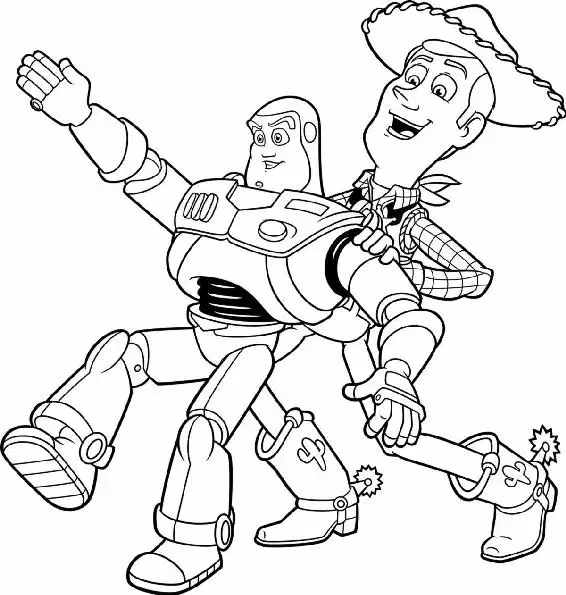

A few months later, in Andy’s new home… A cheery wreath hung on the front door. Lights twinkled around the frosty picture window. Inside the warm and cozy house, Andy’s family gathered around a beautifully decorated Christmas tree.
Though it was early in the morning, Andy was wide awake, poking and prodding the presents beneath the tree. “Which one can I open first?” he asked his mom.
“Let’s let Molly open one,” Mrs. Davis replied.
As Andy handed his sister a present, one of the bulbs on the Christmas tree moved a quarter of an inch, and a small Green Army Man peeked out at the Davis family with his tiny green binoculars. Behind him, several soldiers clung to silver tinsel as they climbed into the tree. Another soldier reached for a knob on the baby monitor that was wedged between some sturdy branches.
Upstairs in Andy’s room, the receiving end of the baby monitor crackled with static.
“Frankincense—this is Myrrh,” Sarge’s voice announced. “Come in, Frankincense.”
Buzz leaned forward from his spot on Andy’s bed. Beside the monitor, Hamm called out, “Hey, heads up, everyone! It’s showtime!” Andy’s toys chattered excitedly as they gathered on the floor below.
“Whoa! It’s time!” said Rex. The toys ran toward the monitor. Woody was about to follow when a shepherd’s crook yanked him backward. Bo Peep smiled at the sheriff and pointed up to a shelf, where her sheep dangled sprigs of mistletoe above the two dolls’ heads.
“Say,” Woody began. “Isn’t that mistletoe?” Bo Peep nodded. Then she flung her arms around Woody and dipped him backward for a big old- fashioned kiss.
The rest of the toys clustered below the monitor in anticipation. The fear they had felt the day of Andy’s birthday party was long gone.
“Quiet, everyone!” Buzz called out. The toys settled down to listen to Sarge’s report.
“Molly’s first present is… Mrs. Potato Head. Repeat: Mrs. Potato Head.”
Hamm laughed, slapping Mr. Potato Head on the back. “Way to go, Idaho!”
“Gee,” Mr. Potato Head said. “I better shave.” He whipped off his plastic mustache piece and grinned.
Woody climbed onto the bed and sat down beside Buzz. The spaceman nodded hello, then stifled a grin when he saw the lipstick smears all over Woody’s face.
“Come in, Frankincense,” came Sarge’s voice again. “Andy is now opening his first present—” Static made his voice difficult to understand. Buzz banged on the side of the monitor sharply.
“Buzz Lightyear,” Woody said, tipping his cowboy hat back on his head. “You’re not worried, are you?”
“Me? No, no, no, no,” Buzz said. Then he looked up anxiously. “Are you?”
Woody slung his arm around his best friend’s shoulders and chuckled. “Now, Buzz, what could Andy possibly get that is worse than you?”
Suddenly, Andy gave an excited shout from downstairs. Buzz and Woody stared at each other, their smiles dropping into open-mouthed shock as they heard yapping coming through the monitor. Bark-bark-bark!
Oh, no! There was just one thing worse than a brand-new toy: a brand-new puppy!
